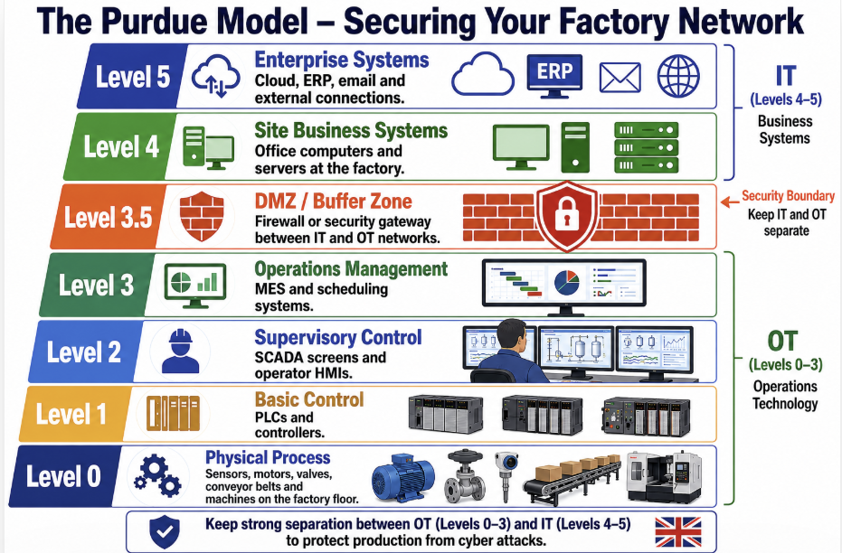

Why Cybersecurity Matters for North West Manufacturers
Manufacturing is a high-value target for cyber threats. As you adopt IoT, AI, automation, and connected systems, strong cybersecurity is essential for protecting production, data, people, and reputation.
- Cyber attacks on manufacturing have risen sharply (ransomware, supply chain attacks, OT/ICS breaches).
- Attacks can stop production lines, leak intellectual property, or cause physical damage.
- UK manufacturing faces skills shortages and longer recruitment times for cyber roles.
- Industry 5.0 increases connectivity — bringing both opportunity and risk.
Good cybersecurity protects your competitiveness, not just your systems.
The 5 Pillars of Manufacturing Cyber Resilience
Use these five pillars as your practical framework. Build them step by step to create strong, sustainable cyber resilience.
Board-level ownership and clear cyber risk oversight.
Cyber risk is a business risk. Leaders must understand it and provide strategic direction.
Identify and manage threats across IT, OT, and the supply chain.
Understand your biggest risks and prioritise what needs protection most.
Train staff and build a security-aware workforce.
Technology alone is not enough — people are your first line of defence.
Secure networks, devices, and systems (IT + OT).
Implement Zero Trust, strong access controls, patching, and segmentation between IT and factory systems.
Prepare to respond, recover quickly, and learn from incidents.
Have tested incident response plans, backups, and business continuity measures in place.
OT/ICS Security for Manufacturing
Manufacturing systems such as PLCs, SCADA, robots, sensors and automated production lines use Operational Technology (OT) and Industrial Control Systems (ICS). These systems directly control physical processes on the factory floor.
Why OT Needs Special Protection
- IT systems focus mainly on confidentiality of data.
- OT/ICS systems focus on availability, safety and real-time control. Even a short cyber incident can stop production lines, damage equipment or create safety risks.
- Legacy OT equipment is often 10–20 years old and was never designed for internet connectivity or modern threats.
The Purdue Model – Simple Network Architecture Guide
The Purdue Model divides factory networks into clear levels (0–5). It helps you separate office IT from factory OT so problems cannot easily spread.

Key Protection Idea: Keep strong separation between OT (Levels 0–3) and IT (Levels 4–5). Use firewalls or data diodes in the DMZ (Level 3.5) so that a problem in the office cannot reach the factory floor.
Practical tip for SMEs: Draw your own simple version of this model for your factory. List your equipment in each level. It immediately shows you the best places to add protection.
Top Practical Actions for North West Manufacturers
Segment IT and OT networks using firewalls or unidirectional gateways.
Limit remote access with multi-factor authentication and just-in-time controls.
Patch and update OT systems carefully — always test first.
Monitor for unusual behaviour on the factory floor.
Choose new connected machines that follow secure-by-design principles.
Source: NCSC Secure Connectivity Principles for Operational Technology (developed with international partners).
Cybersecurity Risks in AI Adoption
AI can help manufacturers improve productivity, quality control and decision-making, but it can also introduce new cybersecurity risks when connected to business data, cloud platforms or operational systems.
For broader guidance on responsible AI use, governance and human oversight, visit the Safe AI page.
Data Poisoning
Attackers manipulate data so AI systems learn the wrong patterns.
Click to learn more →Data Poisoning
Bad training, supplier or sensor data can lead to incorrect AI outputs.
Manufacturing example: faulty quality inspection or wrong maintenance predictions.
Action: protect datasets, validate data sources and monitor AI outputs.
Model Theft
AI models can contain valuable business knowledge and intellectual property.
Click to learn more →Model Theft
Stolen models may expose production logic, process knowledge or competitive information.
Manufacturing example: a competitor gains insight into your optimisation model.
Action: restrict access, log usage and protect model files/API access.
Prompt Injection
Malicious instructions can trick AI tools into unsafe behaviour.
Click to learn more →Prompt Injection
Hidden instructions in emails, documents or webpages may override AI rules.
Manufacturing example: an AI assistant reveals sensitive supplier data.
Action: limit AI permissions and review outputs before action.
Supply Chain Risks
Third-party AI tools, plugins and datasets can introduce weaknesses.
Click to learn more →Supply Chain Risks
AI tools often rely on external models, APIs, libraries and datasets.
Manufacturing example: an insecure plugin connects to internal files.
Action: check suppliers, contracts, security controls and update practices.
Increased Attack Surface
Connecting AI to business or factory systems creates new entry points.
Click to learn more →Increased Attack Surface
AI connected to cloud tools, business systems or OT environments can increase cyber exposure.
Manufacturing example: AI linked to production data becomes a new target.
Action: use access controls, monitoring, segmentation and incident planning.
Sources: NCSC AI cyber security guidance · NCSC secure AI development guidelines · NCSC ML supply chain principles · NIST adversarial machine learning taxonomy
Cyber Governance for Boards
Source: NCSC Cyber Governance for Boards
Cyber risk is a principal business risk. Boards must provide effective oversight even if they are not technical experts.
Key Governance Principles (NCSC)
Identify and understand cyber risks across IT and OT environments, including supply chain risks.
Integrate cyber security into the overall business strategy with clear board-level ownership.
Promote a positive security culture and ensure staff understand their responsibilities.
Regularly review performance and hold management accountable.
Ensure robust plans exist to respond to and recover from cyber incidents.
NCSC's Cyber Security Training for Staff
Source: NCSC Official Guidance
The NCSC has developed a free, easy-to-use e-learning package called "Staying Safe Online: Top Tips for Staff". Ideal for manufacturing teams.
Duration: Less than 30 minutes • Completely free
What the Training Covers:
- Why cyber security matters to everyone
- How cyber attacks happen
- Defending against phishing
- Using strong passwords
- Securing your devices
- Reporting incidents (“If in doubt, call it out”)
Quick Cyber Maturity Self-Check for SMEs
Score each statement from 1 (Not started) to 5 (Fully in place). Total score out of 50.
Your Total Score: 0/50
Reflection Questions
- What is one area you will improve in the next 3 months?
- Would you like free tailored support from the NWSmart5.0 team?
Cybersecurity Resources & Guides
Read short summaries below, then download the full PDF.
Scroll sideways to browse all guides →
NCSC A5 Small Business Guide
Practical cybersecurity advice specifically for small and medium-sized businesses. Covers risk management, passwords, updates, and incident response.
Download PDFNCSC A5 Response and Recovery Guide
Step-by-step guidance on how to prepare for, respond to, and recover from cyber incidents.
Download PDFMitigating Malware and Ransomware Attacks
How to prevent, detect, and recover from ransomware and malware threats — critical for manufacturing environments.
Download PDFSecuring Your Devices
Essential advice on securing laptops, mobiles, and factory devices against common threats.
Download PDFHow to Secure Your Online Meetings
Best practices for secure video conferencing and remote meetings, including access controls, meeting links, screen sharing and participant management.
Download PDFChoosing a Managed Service Provider (MSP)
Guidance on what to check when choosing an external IT or cybersecurity provider, including responsibilities, contracts and security expectations.
Download PDFEffective Steps to Cyber Exercise Creation
A practical guide for planning cyber incident exercises so teams can practise responding to realistic cyber scenarios before a real incident happens.
Download PDFRecovering a Hacked Account
Step-by-step advice for regaining control of an account after compromise, including password resets, recovery checks and securing linked accounts.
Download PDFSocial Media – Protect What You Publish
Advice on reducing risks from oversharing online, protecting business reputation and avoiding information that could help attackers target your organisation.
Download PDFHelpful Videos & Quick Links
Short, practical videos from the National Cyber Security Centre.
Cyber Action Toolkit
Preparing for Cyber Incidents
Reporting a Cyber Incident
What is Phishing?
Cyber Essentials
Cyber Essentials is a UK government-backed certification scheme that helps organisations protect themselves against common online threats. It focuses on five key controls: firewalls, secure configuration, access control, malware protection, and security updates.
For manufacturing SMEs, it can strengthen basic cyber resilience, support supplier confidence, and help demonstrate that your business takes cybersecurity seriously.
Learn About Cyber EssentialsTake Five – Stop Fraud
Take Five is a national fraud awareness campaign that helps people recognise and avoid scams, especially payment fraud, impersonation, and social engineering.
This is useful for SMEs because many cyber incidents begin with a convincing email, phone call, invoice request, or fake supplier message.
Visit Take Five